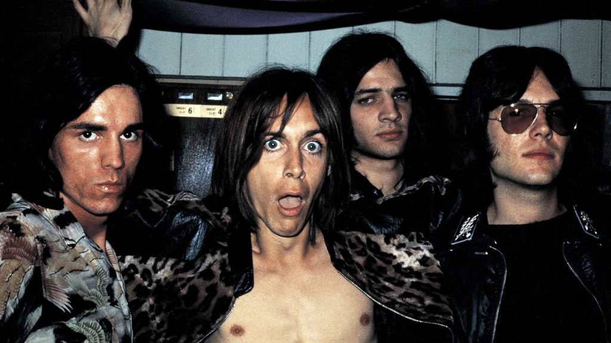
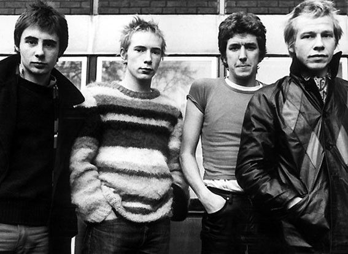
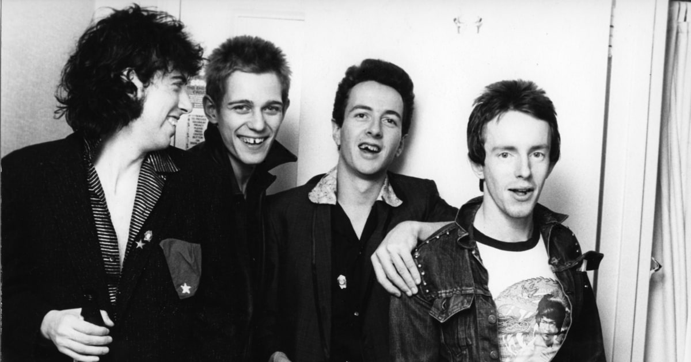
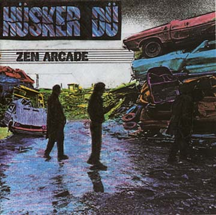
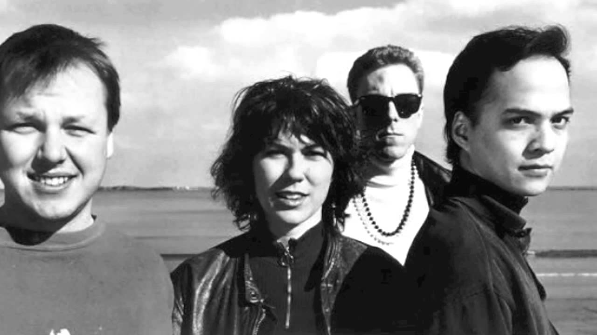
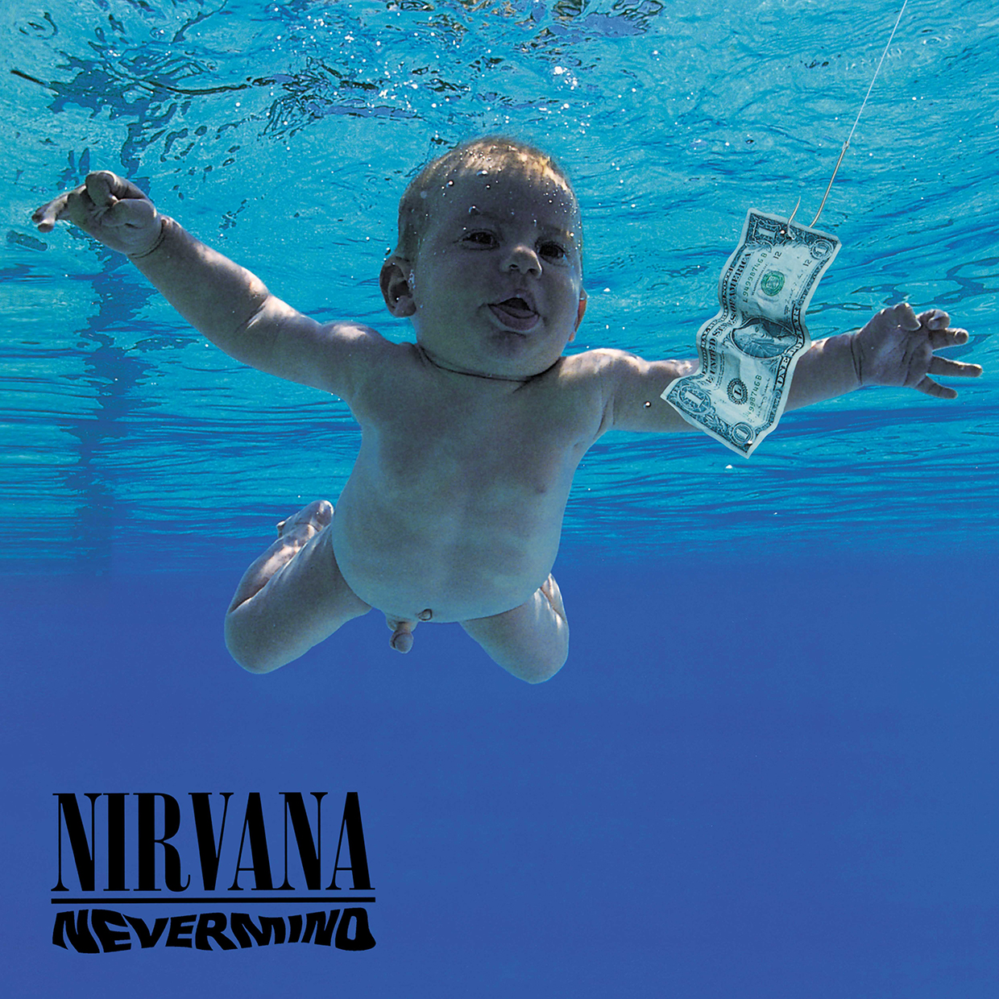
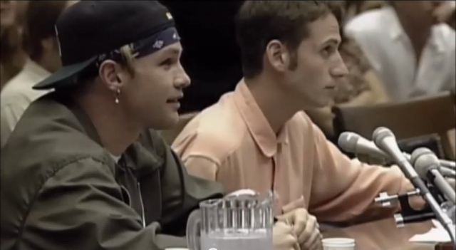

History of Alternative
While alternative rock did not get its name unitl the late 1970's, its roots were formed in the 1960's with the advent of proto-punk bands. Velvet Underground, MC5, Iggy and the Stooges and other bands set the stage for alternative bands as they created punk music that differed from the mainstream sounds of their era.

Iggy and the Stooges
The early 1970's is when the roots of alternative were firmly planted in American culture. Ironically, the inspiration for American alternative rock comes from many English bands, as English went through a cultural rejection before the United States. Bands like The Clash and the Sex Pistols, while short lived, greatly influenced the creation of the late 70's American "garage" bands. Most enthusiasts consider the Sex Pistols as the initiation of punk movement, and The Clash only solidified the rejection of mainstream culture.

The Sex Pistols

The Clash
The late 1970's was the defining moment of American alternative rock. Many bands were formed at this time, effectively just known as "garage" bands. These bands typically operated out of their garage (hence their name), and never gained mainstream notoriety. The bands performed at small clubs and recorded for independent record labels. They relied on word of mouth to spread their popularity, and they actively pursued their defining characteristic: the rejection of mainstream media, culture, and music.
The 1980's were a time of rapid expansion for the genre, at least in the underground scene. Hüsker Dü released Zen Arcade, a defining album for the genre. Alternative rock started to branch out, with the Minutemen mixing punk with funk and the Meatpuppets mixing punk with country. While all these bands released to little commercial success, their notoriety in the underground alternative scene was cemented.

Hüsker Dü's Zen Arcade
Alternative was firmly defined in America as an anti- mainstream culture by the late 1980's. The musical genre was ready to explode- it just needed bands to take the spotlight. The Pixies, They Might Be Giants, and Throwing Muses all broke out of the underground scene during this time with varying success. The "college rock" genre was filled with bands sucha s these, as they saw most success on college radio stations. The Pixies, in particular, were very popular in the U.K. during this time period, despite being formed in the United States.

The Pixies
The 1990's saw the rise and fall of mainstream alternative, as grunge music made waves in the United States
By the end of the decade, major labels were signing headline alternative acts, such as R.E.M. and Jane's Addiction. In the early 1990's, Seattle, Washington saw the creation of a new form of alternative: grunge. Bands like Nirvana and Pearl Jam all came into creation and exploded upon arrival. MTV started playing more and more grunge on their TV channel, and Lollapalooza formed as a alternative music festival. Alternative was everywhere, from the TV to the radio to magazines and everywhere in between.
 Alternative became commercialized with the popularity of Nirvana's Nevermind, Pearl Jam's Ten and Soundgarden's Badmotorfinger. This commercial success went completel against the genre's roots, and many bands tried to stay underground with limited commercial appeal. Artist Liz Phair, Superchunk, and Fugazi were all underground alternative acts that became known as a new form of alternative: indie rock. While alternative stole the limelight of the 90's, a new underground blossomed in the form of indie rock
Alternative became commercialized with the popularity of Nirvana's Nevermind, Pearl Jam's Ten and Soundgarden's Badmotorfinger. This commercial success went completel against the genre's roots, and many bands tried to stay underground with limited commercial appeal. Artist Liz Phair, Superchunk, and Fugazi were all underground alternative acts that became known as a new form of alternative: indie rock. While alternative stole the limelight of the 90's, a new underground blossomed in the form of indie rock

Nirvana's Nevermind
Liz Phair
The tragic death of Nirvana's lead singer Kurt Cobain in 1994 began the sharp decline of the alternative genre. Pearl Jam became entangled in a lawsuit with Ticketmaster that prevented Pearl Jam from selling any tickets in the United States. Almost serving as alternative's nail for its coffin, Lollapalooza was halted in 1998 because it could not even find a headliner. The hiatus continued until 2003, when a new wave of softer alternative rock became popularized.

Pearl Jam v. Ticketmaster